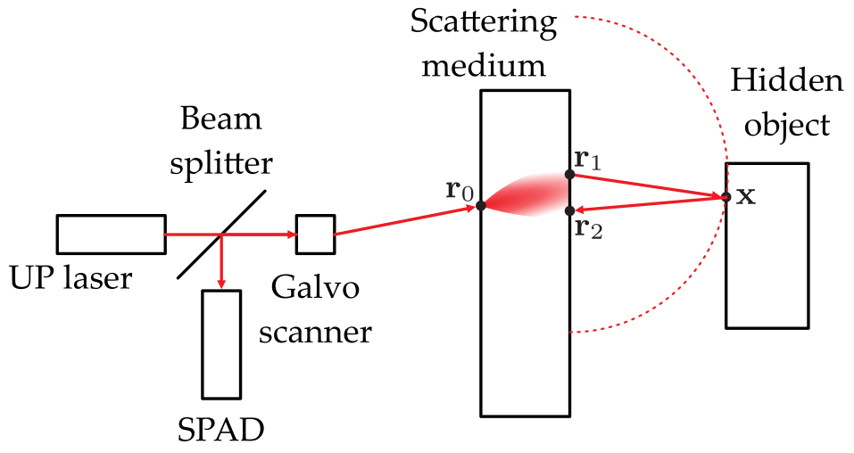

Time-Of-Flight Imaging
Contents
\(\begin{align} \newcommand{transp}{^\intercal} \newcommand{F}{\mathcal{F}} \newcommand{Fi}{\mathcal{F}^{-1}} \newcommand{inv}{^{-1}} \newcommand{stochvec}[1]{\mathbf{\tilde{#1}}} \newcommand{argmax}[1]{\underset{#1}{\mathrm{arg\, max}}\,} \newcommand{argmin}[1]{\underset{#1}{\mathrm{arg\, min}}\,} \end{align}\)
Computational Imaging
Time-Of-Flight Imaging#
Content#
Introduction
Transient imaging
Non-line-of-sight imaging
Imaging through scattering media with confocal diffuse tomography
Introduction#
Time-of-flight imaging techniques try to capture light while it is in motion or they try to measure the light’s travel time inside a scene with extreme accuracy.
The resulting information can be exploited to enable several novel applications in various fields, e.g., in robotic vision, remote sensing, medical imaging, autonomous driving, etc.
Key enablers for these approaches are ultrashort pulse lasers and high-sensitive light detectors.
Ultrashort pulse lasers#
Ultrashort pulse lasers (UPL) can emit light pulses of very short duration, typically of the order of femtoseconds (\(10^{-15}\)s) to one picosecond (\(10^{-12}\)).
Common ultrashort pulse lasers are based on Ti:sapphire crystals or dyes.
Single-photon avalanche diode#
So-called single-photon avalanche diodes (SPADs) are semiconductors that are similar to common photodiodes.
In a photodiode, a low bias voltage is used so that, due to the photoelectric effect, arriving photons cause a leakage current that increases linearly with the number of arriving photons. The linearity is exploited to perform quantitative measurements of the incident light’s intensity.
In a SPAD, the bias voltage is set so high, that even a single arriving photon can cause an avalanche of electrons to be released from the surrounding bulk material leading to a corresponding current.
The auxiliary electronics working along with a SPAD have to correctly sense the increasing current, generate a synchronous output signal, lower the bias voltage to quench the avalanche and restore the initial operating conditions.
As this takes some time, the SPAD is not sensitive for further photons for a so-called dead time of tens to hundreds of nanoseconds.
When properly synchronized, ultrashort pulse lasers and SPADs can be employed to precisely measure the time light travels inside the observed scene. Via the speed of light \(c\), this time can be converted into a geometric distance.
This is also the principle used in so-called light detection and ranging (lidar) devices to capture a point cloud of the observed scene containing the distances to the measured points.
The typical output value of a SPAD synchronized with an UPL is a time value corresponding to the duration between the emission of the laser pulse and the detection of a photon by the SPAD.
As SPADs usually only measure the travel time of one photon for one emitted laser pulse due to the comparatively long dead time, usually millions of laser pulses are emitted (at MHz rates) and the corresponding measured travel times are collected in a histogram \(h\).
When emitting a laser pulse into the scene, a highly precise timer is started that is stopped as soon as the SPAD registers an event. The measured time is then converted into a digital number by a so-called time-to-digital converter (TDC).
SPADs are commercially available as:
Single pixel sensors
A full image is obtained via a two-dimensional scanning of the scene or by optical coding.One-dimensional arrays
Only a one-dimensional scanning is required to scan a volume of the scene.Two-dimensional arrays
No additional scanning is required. Unfortunately, the large footprint of currently available SPADs severely limits the spatial resolution when used in a two-dimensional array without optical scanning.
Transient imaging#
So-called transient images are images of a scene captured at certain points in time while a pulse of light is still traveling through the scene. Typical cameras integrate over all transient images that are created by a scene due to their comparatively long exposure time when compared to the speed of light.
Transient imaging techniques employ SPADs and UPLs in concert to reconstruct transient images at different time steps. Transient images can reveal interesting properties (i.e., different events of scattering and light redirections) of the scene.
The values \(\tau\) of a pixel of a set of transient images corresponding to some time duration can be imagined as a time impulse response function, i.e., the temporal intensity response of the scene to a pulse of light.
interact(lambda i: showFig('figures/11/transient_imaging_',i,'.svg',800,50), i=widgets.IntSlider(min=(min_i:=0),max=(max_i:=5), step=1, value=(max_i if book else min_i)))
<function __main__.<lambda>(i)>
Forward model of transient imaging#
After emitting a laser pulse into the scene, the amount of light scattered back to the detector is a temporally varying distribution of photons \(g\). The photon flux \(r\) incident on the detector during time interval \(t\) is given by:
\(\begin{align} r(t) = (\tau * g)(t) + a(t) \,, \end{align}\)
with \(\tau\) denoting the temporal impulse response of the scene and with the ambient photon flux \(a(t)\).
The temporal impulse response \(\tau\) incorporates all optical effects of the scene that influence the travel paths / time of the laser pulse (e.g., reflectance, scattering, etc.).
Assume a scene where light would bounce only once before reaching the detector, i.e., with only direct light transport. In this case, \(\tau\) would be a Dirac delta function.
Conversely, for global light transport (i.e., with caustics, complex scattering events, interreflections etc.), \(\tau\) models the corresponding temporal impulse response of the scene.
The ideal photon counter would sample the rate function
\(\begin{align} \lambda (t) = \eta \left( r * f \right) (t) + d \,, \end{align}\)
with \(\eta \in [0,1]\) representing the sensor’s quantum efficiency and the avalanche probability of the SPAD, \(d\) denoting the dark count rate (number of false detections) in Hz and \(f\) being the temporal jitter (about tens or a few hundreds of ps for state-of-the-art SPADs).
An event registered by the SPAD does not necessarily have to be the first arriving photon. Whether a photon is detected within a short time window is a Bernoulli trail with the two possible outcomes of photon detected and no photon detected.
By repeating this Bernoulli trial for \(N\) times by emitting \(N\) laser pulses, the histogram \(h\) of the photon travel times is built up.
The probability of detecting \(h(t)\) photons can be modeled as a Poisson distribution:
\(\begin{align} h(t) \sim \mathcal{P} (N \lambda(t))\,, \end{align}\)
with the expected number of photons \(\lambda(t)\) at time \(t\).
Reconstruction of transient images#
The reconstruction of transient images from the measured noisy and blurry histograms can be modeled as a deconvolution problem in the presence of Poisson noise.
For this means, we vectorize the involved quantities as follows:
the temporal impulse response \(\boldsymbol{\tau} \in \mathbb{R}^{n_x n_y n_t}\), i.e., the sought latent transient image,
the measured histogram \(\mathbf{h}\in \mathbb{R}^{n_x n_y n_t}\) and
the dark count \(\mathbf{d} \in \mathbb{R}^{n_x n_y n_t}\).
With the measurement matrix \(\mathbf{A} \in \mathbb{R}^{n_x n_y n_t \times n_x n_y n_t}\) encoding the convolution of the transient image with the laser pulse \(g\) and the SPAD jitter \(f\), we can express
\(\begin{align} h \sim \mathcal{P}(\mathbf{A} \boldsymbol{\tau} + \mathbf{d}) \,. \end{align}\)
The transient images have spatial resolution of \(n_x \times n_y\) and for each pixel there are \(n_t\) time bins in the histogram.
The reconstruction problem can be formulated as a maximum likelihood estimation with the constraint of non-negative solutions:
\(\begin{align} \hat{\boldsymbol{\tau}} = \argmin{\boldsymbol{\tau}} -\log \left( p(\mathbf{h} \vert \mathbf{A} \boldsymbol{\tau}) \right) + \Psi (\boldsymbol{\tau}) \,, \\ \text{subject to } \, \boldsymbol{\tau} \geq \mathbf{0} \,, \end{align}\)
with the likelihood \(p(\mathbf{h} \vert \mathbf{A} \boldsymbol{\tau})\) of measuring the histogram \(\mathbf{h}\) for a given transient image \(\boldsymbol{\tau}\) and \( \Psi (\boldsymbol{\tau})\) representing a suitable regularizer.
In order to solve this optimization problem with ADMM, first the optimization objectives are split into independent terms via slack variables \(\mathbf{z}_1, \mathbf{z}_2, \mathbf{z}_3 \in \mathbb{R} ^{n_x n_y n_t}\) and the corresponding constraints are added:
\(\begin{align} \hat{\boldsymbol{\tau}} = \argmin{\boldsymbol{\tau}, \mathbf{z}_1, \mathbf{z}_2, \mathbf{z}_3} -\log \left( p(\mathbf{h} \vert \mathbf{z}_1) \right) + \mathrm{pos}(\mathbf{z}_2) + \Psi (\mathbf{z}_3) \,, \\ \text{subject to } \, \mathbf{A}\boldsymbol{\tau} = \mathbf{z}_1, \boldsymbol{\tau} = \mathbf{z}_2, \boldsymbol{\tau} = \mathbf{z}_3 \,, \end{align}\)
with
\(\begin{align} \mathrm{pos}(\mathbf{x})= \begin{cases} +\infty \quad &\text{if } x_i < 0 \text{ for any } i\\ 0 &\text{otherwise.} \end{cases} \end{align}\)
Then, the augmented Lagrangian in scaled form of the objective can be expressed with the Lagrange multipliers \(\mathbf{u}_1, \mathbf{u}_2, \mathbf{u}_3\) corresponding to the three constraints and with the corresponding scalar weights \(\mu_1, \mu_2, \mu_3\):
\(\begin{align} L(\boldsymbol{\tau}, \mathbf{z}_1, \mathbf{z}_2, \mathbf{z}_3, \mathbf{u}_1, \mathbf{u}_2, \mathbf{u}_3) = &-\log \left( p(\mathbf{h} \vert \mathbf{z}_1) \right) + \mathrm{pos}(\mathbf{z}_2) + \Psi (\mathbf{z}_3) \\ & + \frac{\mu_1}{2} \left\|\mathbf{A}\boldsymbol{\tau} - \mathbf{z}_1 + \mathbf{u}_1 \right\| ^2_2 - \frac{\mu_1}{2} \left\| \mathbf{u}_1 \right\| ^2_2 \\ & + \frac{\mu _2}{2} \left\| \boldsymbol{\tau} - \mathbf{z}_2 + \mathbf{u}_2 \right\| ^2_2 - \frac{\mu _2}{2} \left\| \mathbf{u}_2 \right\| ^2_2 \\ & + \frac{\mu _3}{2} \left\| \boldsymbol{\tau} - \mathbf{z}_3 + \mathbf{u}_3 \right\| ^2_2 - \frac{\mu _3}{2} \left\| \mathbf{u}_3 \right\| ^2_2 \\ \end{align}\)
Experimental results#
Experimental results achieved with the described approach are reported in the corresponding paper Reconstructing Transient Images from Single-Photon Sensors by Matthew O’Toole et al.
Non-line-of-sight imaging#
As mentioned in the introduction, many applications like robotics, medicine, autonomous driving, etc. could greatly benefit from knowing in advance what is behind a corner or other structure blocking the direct line of sight.
Non-line-of-sight (NLOS) imaging methods can provide that information by emitting ultra short laser pulses into the scene and by measuring the time elapsed until corresponding photons return from the scene.
The following figure visualizes the working principle.
interact(lambda i: showFig('figures/11/nlos_task_',i,'.svg',800,50), i=widgets.IntSlider(min=(min_i:=0),max=(max_i:=6), step=1, value=(max_i if book else min_i)))
<function __main__.<lambda>(i)>
The setup shown in the figure uses a so-called confocal non-line-of-sight (C-NLOS) setup, where the SPAD is observing the same point that is illuminated by the laser source. Using this setup greatly facilitates the formation of the forward model.
The following assumptions are made for deriving the forward model:
for every emitted laser pulse, there is only a single scattering event behind the wall (i.e., no multiple reflections in the hidden part of the scene),
light scatters isotropically (i.e., uniformly into all directions, ignoring the cosine terms of Lambert’s law) and
the hidden scene is free form occlusions.
Image formation model#
Measurements from a C-NLOS system consist of two-dimensional temporal histograms resulting form confocally scanning points \(x', y'\) on a planar wall with \(z'=0\). The 3D measurement volume for a sampling position \((x',y')\) and a sample time \(t\) is given by
\(\begin{align} \tau (x', y', t) = \underset{\Omega}{\int\int\int} \frac{1}{r^4} \rho (x,y,z) \delta \left( 2 \sqrt{(x'-x)^2 + (y'-y)^2 + z^2} - tc \right) \mathrm{d}x \mathrm{d}y \mathrm{d}z \,, \end{align}\)
with the set \(\Omega\) of possible coordinates of hidden points (i.e., with \(z\geq0\)), the speed of light \(c\), the albedo (i.e., the fraction of light that is scattered back) \(\rho(x,y,z)\) of the hidden scene points and \(r = \sqrt{(x'-x)^2 + (y'-y)^2 + z^2}\) denoting the radius of the cone on whose surface possible hidden points could be present for the currently sampled position \((x',y')\) and time \(t\).
This equation represents a partial convolution with respect to the spatial coordinates \(x,y\) (recall the definition of the convolution: \((g*h)(x')=\int g(x)h(x'-x) \mathrm{d}x\)).
The radius can also be expressed by means of the travel time \(t\), i.e., \(r = \sqrt{(x'-x)^2 + (y'-y)^2 + z^2}=\frac{tc}{2}\) and gets independent from the spatial variables. Hence, the term \(\frac{1}{r^4}=\left( \frac{2}{tc} \right)^4\) can then be pulled out of the triple integral.
By adequately substituting the variables in the equation shown before, it can be expressed in terms of 3D convolution.
Setting
\(\begin{align} z=\sqrt{u}, \quad \mathrm{d}z = \frac{\mathrm{d}u}{2\sqrt{u}}, \quad v=\left( \frac{tc}{2} \right)^2 \end{align}\)
results in the so-called light-cone transform (LCT):
\(\begin{align} \underbrace{v^{3/2} \tau (x', y', 2\sqrt{v}/c)}_{\mathcal{R}_t \left\{ \tau \right\} (x',y',v) } = \underset{\Omega}{\int\int\int} \underbrace{\frac{1}{2\sqrt{u}} \rho (x,y,\sqrt{u})}_{\mathcal{R}_z \left\{ \rho \right\} (x,y,u) }\, \underbrace{\delta \left( (x'-x)^2 + (y'-y)^2 + u - v \right) }_{h(x'-x, y'-y, v-u)} \mathrm{d}x \mathrm{d}y \mathrm{d}u \end{align}\)
which can be expressed compactly as a 3D convolution \(\mathcal{R}_t \left\{ \tau \right\} = h* \mathcal{R}_z \left\{ \rho \right\} \).
The function \(h\) is a shift-invariant 3D convolution kernel.
The operator \(\mathcal{R}_z\) non-uniformly resamples and attenuates the elements of \(\rho\) along the \(z\)-axis.
The operator \(\mathcal{R}_t\) non-uniformly resamples and attenuates the measurements \(\tau\) along the \(t\)-axis.
Expressed with discrete vectors \(\boldsymbol{\tau}\in \mathbb{R} ^{n_x n_y n_t}_+\) and \(\boldsymbol{\rho}\in \mathbb{R} ^{n_x n_y n_z}_+\), the image formation model can be written as:
\(\begin{align} \mathbf{R}_t \boldsymbol{\tau} = \mathbf{H} \mathbf{R}_z \boldsymbol{\rho} \,, \end{align}\)
with \(\mathbf{H}\in \mathbb{R} ^{n_x n_y n_h \times n_x n_y n_h}_+\) encoding the 3D convolution and \(\mathbf{R}_t \in \mathbb{R} ^{n_x n_y n_h \times n_x n_y n_t}_+, \mathbf{R}_z \in \mathbb{R} ^{n_x n_y n_h \times n_x n_y n_z}_+\) representing the temporal, respectively, the spatial transformation operations.
Reconstruction#
The reconstruction can now be solved in closed-form by inverting the discretized forward model and by using the Wiener filter for the deconvolution part:
\(\begin{align} \hat{\boldsymbol{\rho}} = \mathbf{R}^{-1}_z \mathbf{F}^{-1} \left( \frac{\mathbf{\hat{H}}^*}{\left| \mathbf{\hat{H}} \right|^2+ \frac{1}{SNR} } \right) \mathbf{F} \mathbf{R}_t \boldsymbol{\tau} \,, \end{align}\)
with \(\mathbf{F}\) and \(\mathbf{F}^{-1}\) denoting the 3D discrete Fourier transform, respectively, the inverse Fourier transform, \(\mathbf{\hat{H}}\) representing a diagonal matrix with the Fourier coefficients of the 3D convolution kernel and \(SNR\) denoting the frequency-dependent signal-to-noise ratio.
Experimental results#
Experimental results achieved with the described approach are reported in the corresponding paper Confocal Non-Line-of-Sight Imaging Based on the Light-Cone Transform by Matthew O’Toole et al.
Imaging through scattering media with confocal diffuse tomography#
Scattering media (i.e., fog, dust, murky water, scattering tissue) poses fundamental limits on various optical imaging applications like lidar scanning for autonomous driving, underwater vision and medical imaging.
Imaging through scattering media is challenging as the image reconstruction involves solving a highly ill-posed inverse problem.
The technique confocal diffuse tomography (CDT) represents one possible approach to image through thick scatterers.
The basic idea is
to model the light transport in the scattering medium as a diffusion process,
incorporate it in the image formation forward model,
approximate it as a convolution operation and
directly solve it using a Wiener filter approach.
The following figure shows the optical concept of CDT:
Image formation model#
Solving the diffusion equation yields \(\phi (t, \mathbf{r}_0, \mathbf{r}_1)\), which denotes the power transmitted through the scattering medium with \(\mathbf{r}_0\) representing the position illuminated by the laser, \(\mathbf{r}_1\) being the position on the far side of the scatterer and \(t\) denoting the time.
The function \(\phi\) involves parameters describing the scattering properties of the scattering medium which have to be calibrated w.r.t. the actual medium.
The complete transient image stack for position \(\mathbf{r}_0\) is the result of light diffusion through the scattering medium, free-space propagation to and back from the point \(\mathbf{x}\) on the hidden object and diffusion back through the scattering medium.
Due to the confocal nature of the setup (i.e., the same point on the scatterer is illuminated and observed) and since the thickness of the scattered is small compared to the distance between the scatterer and the hidden object, we can assume that \(\mathbf{r}_1 \approx \mathbf{r}_2\), leading to
\(\begin{align} \tau (t, \mathbf{r}_0) &= \underbrace{\phi (t, \mathbf{r}_0, \mathbf{r}_1) * \phi (t, \mathbf{r}_0, \mathbf{r}_1)}_{\bar{\phi}} * I(t, \mathbf{r}_1, \mathbf{r}_1) \\ &= \bar{\phi }*I \,, \end{align}\)
with \(I(t, \mathbf{r}_1, \mathbf{r}_1)\) denoting the free-space propagation from \(\mathbf{r}_1\) to the hidden object and back to \(\mathbf{r}_1\).
Notice that \(I\) is essentially the same as for non-line-of-sight imaging and can thus be handled via the light cone transform.
The image formation process can now be expressed in matrix notation:
\(\begin{align} \boldsymbol{\tau} = \bar{\Phi} \mathbf{A} \boldsymbol{\rho} \,, \end{align}\)
with observed measurements \(\boldsymbol{\tau}\), the convolutional diffusion operator \(\bar{\Phi}\), the free-space propagation operator \(\mathbf{A}\) and the albedo \(\boldsymbol{\rho}\) of the hidden object.
Reconstruction#
The sought albedo \(\boldsymbol{\rho}\) of the hidden object can be recovered by means of a Wiener filter-based approach from the observed measurements \(\boldsymbol{\tau}\):
\(\begin{align} \hat{\boldsymbol{\rho}} = \mathbf{A} ^{-1} \mathbf{F}^{-1} \frac{\hat{\bar{\Phi}}^*}{\left| \hat{\bar{\Phi}} \right|^2 + \frac{1}{SNR} } \mathbf{F} \boldsymbol{\tau} \,, \end{align}\)
with Fourier transform operator \(\mathbf{F}\) and inverse Fourier transform operator \(\mathbf{F}^{-1}\), the Fourier transform \(\hat{\bar{\Phi}}\) of \(\bar{\Phi}\) and its complex conjugate \(\hat{\bar{\Phi}}^*\), the signal-to-noise ratio \(SNR\) and the light cone transform-based inversion \(\mathbf{A}^{-1}\) of the free-space operator \(\mathbf{A}\).
Experimental results#
Experimental results achieved with the described approach are reported in the corresponding paper Three-dimensional imaging through scattering media based on confocal diffuse tomography by David B. Lindell and Gordon Wetzstein.